Префектура Нагасаки · Ундзэн · местные овощи
Ундзэн: фермер, который 40 лет хранит семена, и лавка «Танэто», выросшая вокруг его поля
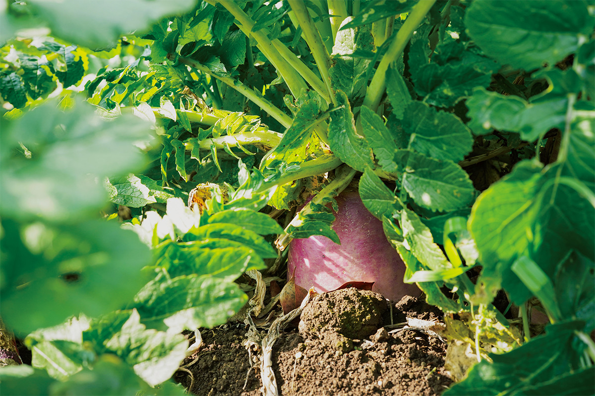
В Ундзэне, на полуострове Симабара, живёт фермер, который сорок лет подряд сам собирает семена местных сортов овощей. Ради вида его цветущего поля сюда переехала семья из Токио, открылась органическая лавка, и вокруг небольшого поля постепенно сложилось целое сообщество.
Поле
Фермер, который «укачивает» семена
Город Ундзэн лежит на полуострове Симабара в префектуре Нагасаки, между морем и горами. Масатоси Ивасаки около сорока лет выращивает здесь овощи без пестицидов и удобрений и каждый год сам собирает с них семена. Сбор семян он называет словом «аясу»: так в Японии говорят, когда укачивают младенца.
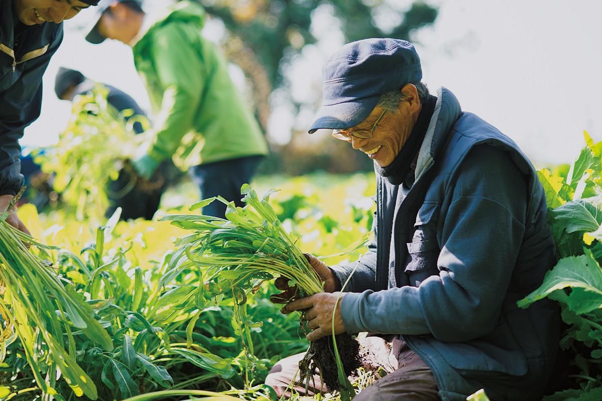
Мы попали на его поле в середине марта. Дорога от побережья поднимается в горы мимо рисовых террас и ступенчатых огородов. Поле у Ивасаки не одно: около десяти участков разбросаны по склонам, чтобы сорта не переопылялись. На одном из них как раз цвела редька. Если сорвать цветок и попробовать, он откровенно отдаёт редькой.
Весной на грядках цветёт «Ундзэн акамурасаки», местная красно-фиолетовая редька. Корнеплод отдаёт все силы цветам, понемногу сморщивается и в конце концов засыхает, удерживая в стручках семена следующего поколения. По словам Ивасаки, это самый красивый момент в жизни растения.
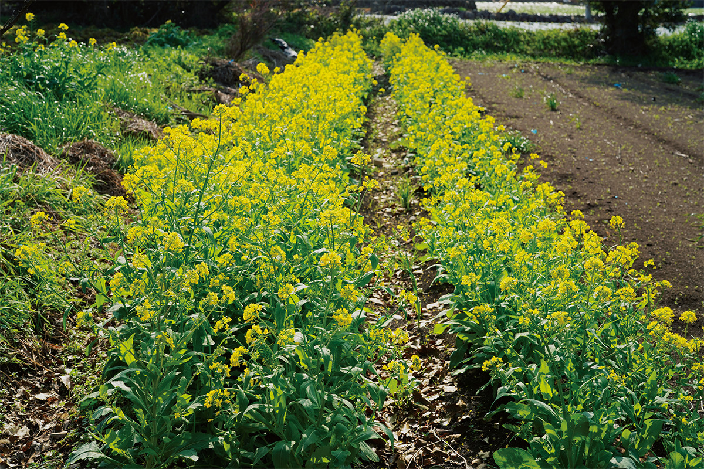
Ивасаки считает, что овощи сильно изменились в 1970-х годах, когда один за другим появились гибриды первого поколения. Вместе с ними незаметно исчезли и органическое земледелие, и привычка собирать свои семена. Семена, выведенные так, чтобы овощи были одинаковой формы и долго хранились при перевозке, продавали в комплекте с удобрениями и пестицидами, и этот большой бизнес изменил поля не только в Японии, но и во всём мире. Свойства гибрида сохраняются лишь одно поколение, поэтому фермеры вынуждены покупать семена каждый год. Слова «без пестицидов» и «органический» теперь слышны часто, но тех, кто, как Ивасаки, растит овощи в основном из собственных семян, почти не осталось. В магазинах круглый год лежат органические салатные наборы с гидропоники, где в одном горшочке растут три вида зелени. Они больше похожи на промышленный товар и составляют полную противоположность овощам Ивасаки.
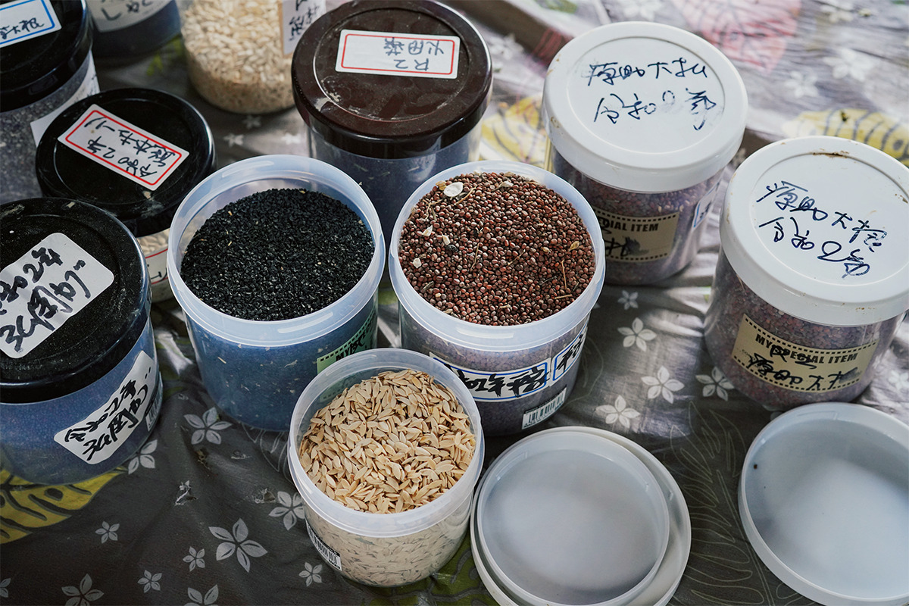
Сильный характер составляет главное достоинство местных сортов. Ивасаки сглаживает их недостатки, развивает сильные стороны и растит их, как детей. У него собраны не только традиционные овощи Нагасаки, например морковь «Курода госун» и горчица «Ундзэн кобу такана», но и семена из разных уголков Японии: в 2022 году от 50 до 80 сортов, а точно их не сосчитать. Лук «Ивацу-нэги» родом из префектуры Хёго, но его семена продолжают жить на поле Ивасаки, и все называют его «Ивасаки-нэги». Семена собирают раз в год, поэтому растения годами понемногу привыкают к земле Ундзэна и набираются сил, чтобы расти без удобрений, на одной лишь почве.
Много лет Ивасаки хранил семена вдвоём с женой. Теперь рядом с ним Тикаси Окуцу, а у самого Ивасаки учатся молодые фермеры, которые разделяют его взгляды.
Переезд
Ради вида цветущего поля
Тикаси Окуцу жил и работал в Токио. В 2013 году он устраивал там мероприятие о японских местных сортах овощей, пригласил Ивасаки выступить и был поражён его рассказом.
«Один фермер сорок лет хранит семена стольких овощей. Думаю, таких, как Ивасаки, не найти во всём мире. Он не стремится попасть в газеты и стать знаменитым, а просто заботится об овощах. Он говорит очень глубокие вещи: фермер, а при этом философ»
Тикаси Окуцу
Через несколько месяцев, в начале мая, Окуцу с семьёй приехал посмотреть на поле Ивасаки. Всё оно было покрыто цветами моркови «Курода госун».
«Белые цветы моркови, и над ними гул насекомых, которых приманил их сладкий запах. Такого поля я ещё не видел»
Тикаси Окуцу
Окуцу захотел сохранить этот вид, и вся семья переехала в Ундзэн.
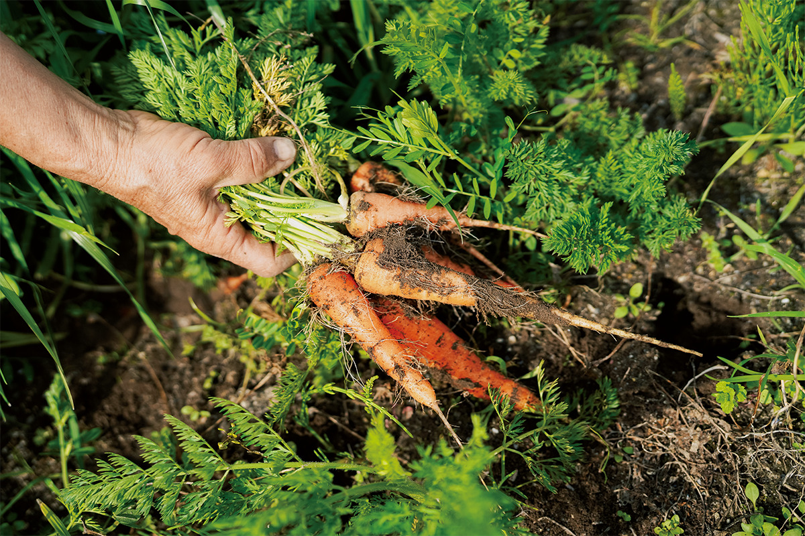
«Если думать только о генетических ресурсах местных сортов, хватило бы и банка семян. Но я хочу сохранить именно этот вид: цветут овощи, все вместе собирают семена, бегают дети»
Тикаси Окуцу
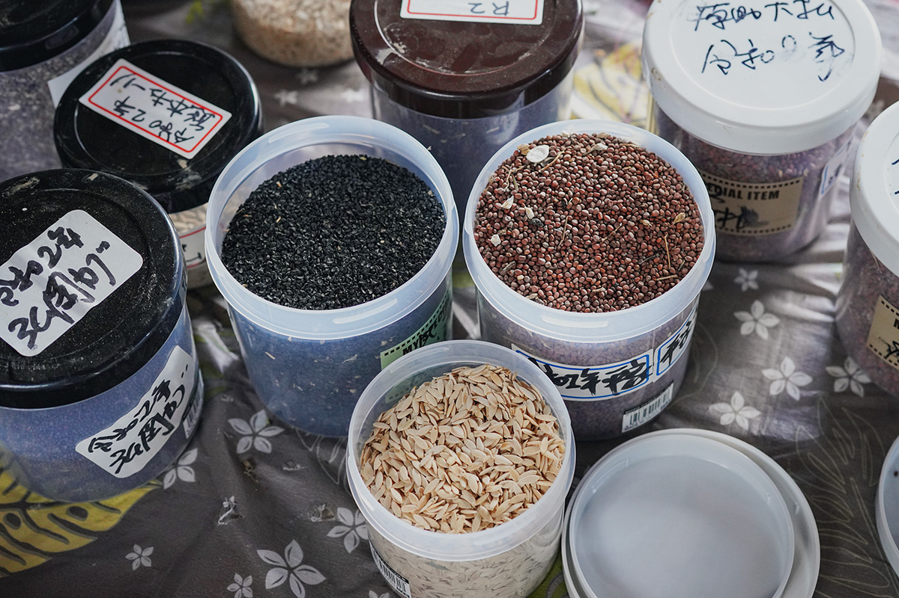
Слово «органический» сегодня живёт своей жизнью, говорит Окуцу. Кто-то из фермеров начинает с модного образа, потому что это красиво звучит и позволяет поднять цену. Главное отличие Ивасаки в другом: он сохраняет поле, на котором цветут овощи.
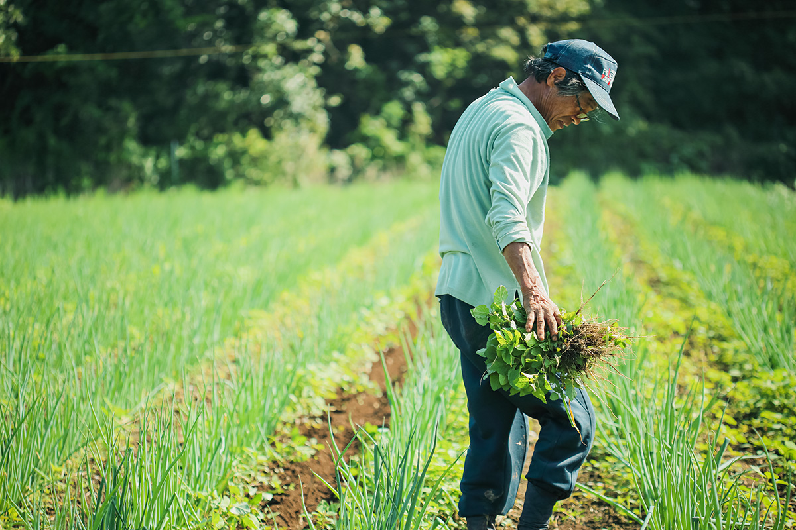
Лавка
«Танэто»: овощи, которые раньше уезжали в большие города
В 2019 году Окуцу открыл органическую лавку «Танэто», где продаются овощи Ивасаки и соседних фермеров. Раньше их урожай отправляли в крупные города, и на месте его было не купить. Лавка связала фермеров с покупателями.
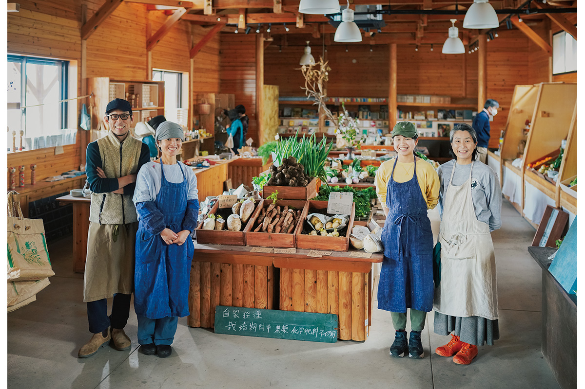
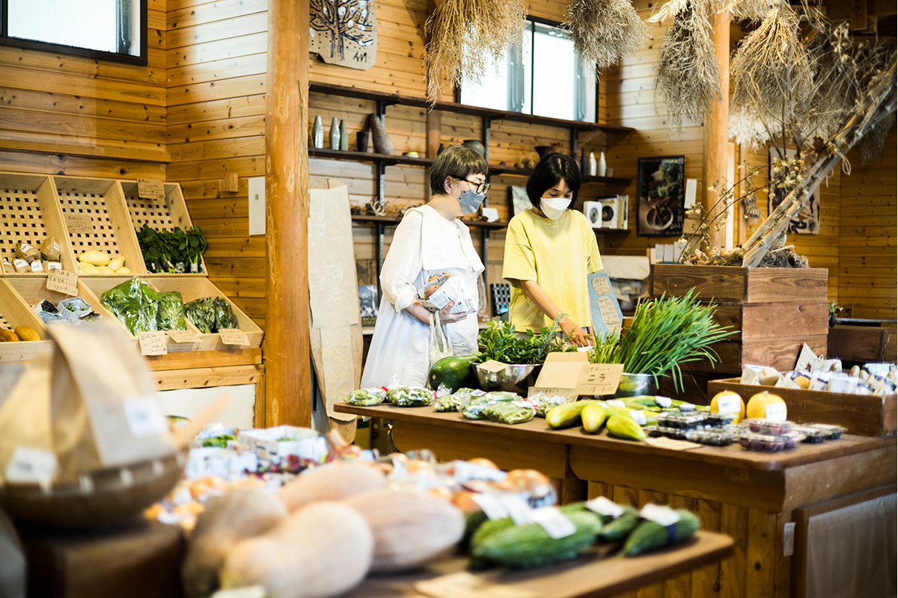
Через Окуцу об овощах Ивасаки узнал известный токийский шеф, который тоже переехал в Ундзэн и открыл здесь ресторан. А в рёкане Yuyado Jyo-kiya на онсэне Обама прижился особый стиль путешествия: гости покупают овощи в «Танэто», приносят их с собой и готовят на пару от горячего источника.
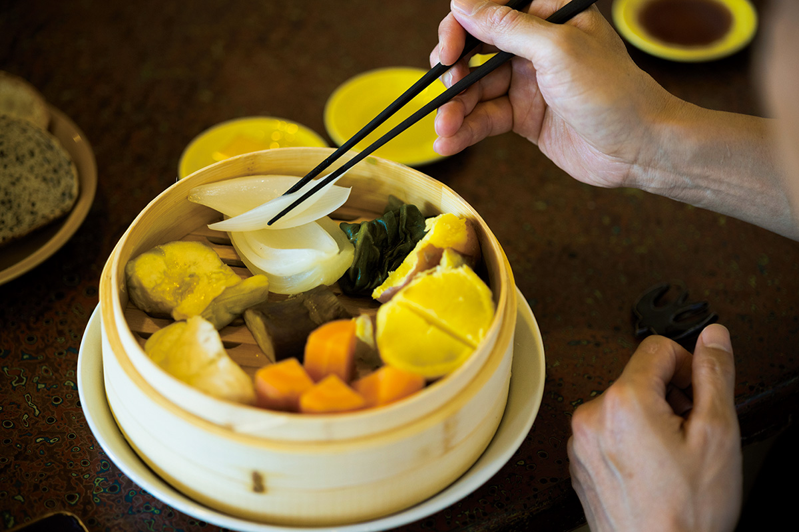
В 2022 году Окуцу получил главный приз премии, которую учредили к открытию скоростной линии «Камомэ» на западе Кюсю, чтобы поддержать людей, делающих свои города привлекательнее. Жюри отметило и многолетний труд Ивасаки, хранящего местные сорта, и работу Окуцу, который открыл лавку и рассказывает людям об этих овощах.
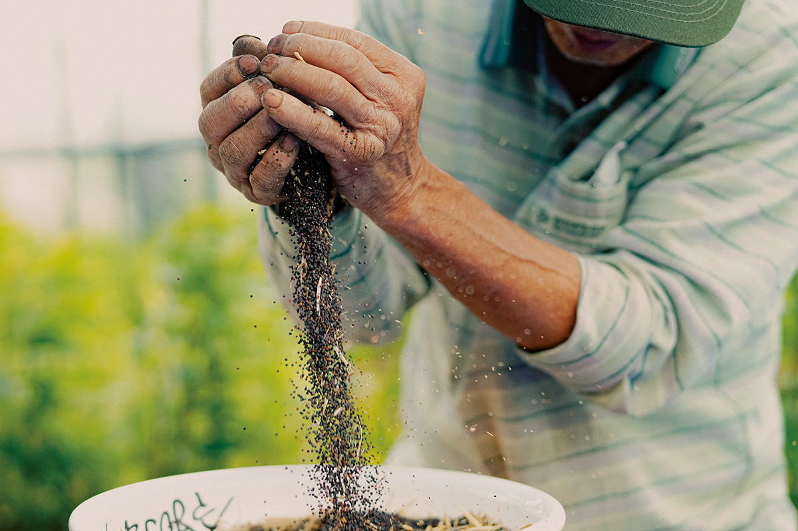
Органическая лавка «Танэто»
- Адрес
- префектура Нагасаки, Ундзэн, Тидзива-тё, Хэй 2138-1
- Телефон
- +81 957-37-2238
- Часы работы
- 10:00–16:00
- Выходные
- среда
- Как добраться
- от станции Айно железной дороги Симабара около 10 минут на такси; от станции Исахая линии JR около 40 минут на автобусе до остановки «Тидзива-кайган иригути», затем около 2 минут пешком
Соседи
Другие фермеры полуострова Симабара
Круг знакомств растёт, и фермеры, работающие рядом с Ивасаки, дружат и с другими хозяйствами полуострова. Одна из них выращивает клубнику в Минамисимабаре, по соседству с Ундзэном. Растить клубнику без пестицидов и удобрений трудно и хлопотно, но на её поле кусты, посаженные ещё в 1989 году, разрослись и крепнут сами, силами природы.
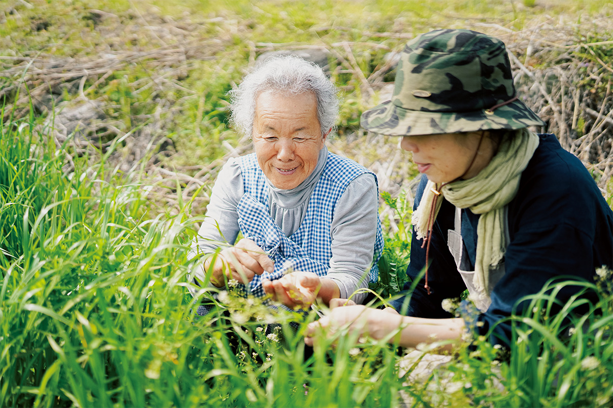
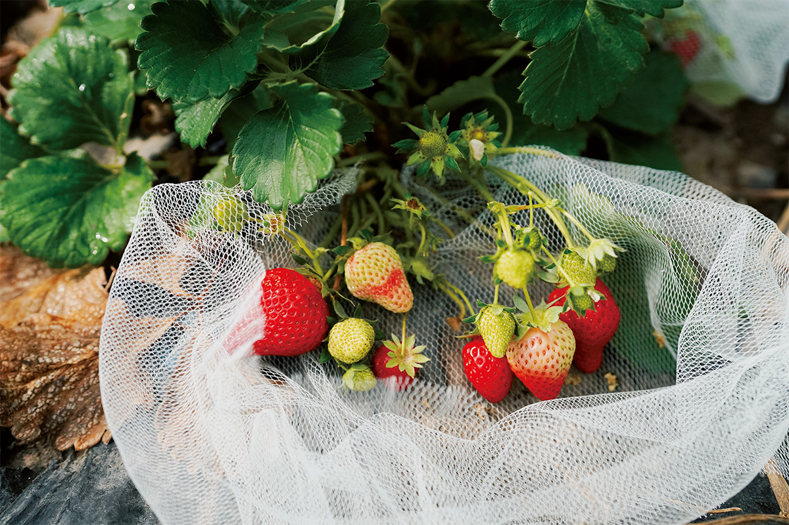
Фото: Адзуса Сигэнобу, Хиромаса Оцука.